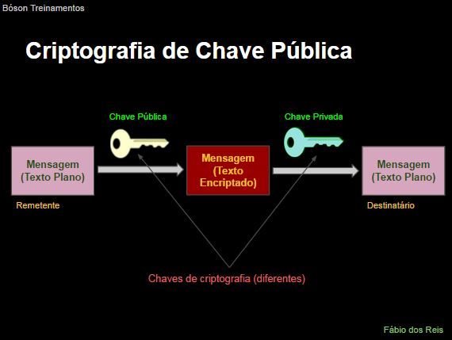
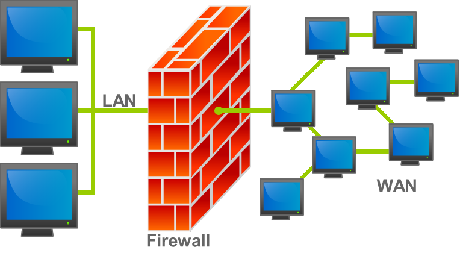

A cifra de César é uma técnica de criptografia bastante simples e provavelmente a mais conhecida de todas. Trata-se de um tipo de cifra de substituição, na qual cada letra de um texto a ser criptografado é substituída por outra letra, presente no alfabeto porém deslocada a um certo número de posições à esquerda ou à direita. A cifra de César recebe esse nome pois, segundo o escrito Suetônio, foi utilizada por Júlio César para se comunicar com seus generais, protegendo mensagens militares.
Sendo uma cifra de substituição monoalfabética, cada letra do texto plano é substituída por uma outra letra do alfabeto no texto criptogradado (cifrado), de forma constante (sempre as mesmas letras são utilizadas). Por conta disso, eele acaba sendo extremamente simples de ser decifrada e nunca é utilizada na prática, pois não possui absolutamente nenhuma segurança. Como o texto cifrado acaba tendo exatamente o mesmo número de caracteres do texto plano, também classificamos a cifra de César como monogrâmica, sendo então classificada mais corretamente como cifra de substituição monoalfabética monogrâmica.
Essas são algumas formas de funcionamento:
Utilizando o exemplo anterior, vamos ver a cifra de César na prática, com rotação à esquerda de quatro posições:
Veja um exemplo de mensagem cifrada nesse método:
Temos alguns sites que podemos usar para criptografar e desencriptar, como esse, que tem a opção de bruteforce e também de escolher o deslocamento: http://www.dcode.fr/caesar-cipher
Uma vulnerabilidade de dia zero (ou zero day) é uma vulnerabilidade de software descoberta por invasores antes que o fornecedor tome conhecimento dela. Como os fornecedores não a conhecem, não existe correção para vulnerabilidades de dia zero, o que aumenta a probabilidade de um ataque bem-sucedido. Uma exploração de dia zero é o método usado pelos crackers para atacar sistemas com essas vulnerabilidades não-identificadas anteriormente.
Um ataque zero day (ataque de dia zero) se aproveita das falhas de um software que os desenvolvedores desconhecem para atacar as vítimas sem aviso prévio.
Um ataque zero day, nada mais é do que uma violação de segurança que tem como alvo uma vulnerabilidade de dia zero. Crackers criam malware especial, mais chamado de malware zero day ou malware de dia zero, que ataca essas falhas de segurança recém-descobertas. Após o ataque zero day, os desenvolvedores precisam se esforçar para identificar a violação, para descobrir o que aconteceu e criar uma solução antes que ocorram mais ataques.
Os ataques zero day são realizados por atores
maliciosos que se dividem nas seguintes categorias: Criminosos virtuais, crackitivistas, espionagem corporativa e guerra virtual.
Um ataque zero day pode explorar vulnerabilidades de diversos sistemas, como, sistemas operacionais, navegadores da web, aplicativos, componentes que possuem código aberto, hardware e firmware, IoT (internet das coisas) e isso amplia o leque de possibilidades de vítimas em potencial para os cibercriminosos.
Usuários que fazem o uso de um sistema vulnerável, como por exemplo, um navegador ou sistema operacional, nesse caso, cibercriminosos podem utilizar das vulnerabilidades de segurança para comprometer o dispositivo e construir grandes botnets (redes de máquinas infectadas controladas remotamente).
Um botnet é uma rede de computadores, que é comandada por uma única pessoa (muitas vezes de forma remota), com vários computadores destinados a fazer uma única tarefa ou várias tarefas com o mesmo objetivo. Na teoria, muitas redes poderiam ser classificadas assim, como as da internet, com seus roteadores e servidores, no entanto, os botnets são usados muitas vezes com más intenções, como por exemplo, enviar e-mails de spam, arquivos maliciosos ou outros tipos de ataques, como por exemplo, de negação de serviço (DoS).
Ransomware é um tipo de software malicioso que bloqueia o acesso aos dados da vítima até que um resgate seja pago, e exibe na tela uma mensagem de requisição de pagamento. No geral, criptografam os arquivos da vítima, tornando-os totalmente inacessíveis e só podem ser decriptados após o pagamento do resgate. Alguns ransomwares criptografam todo o HD da máquina, outros criptografam arquivos e pastas específicos. Trata-se de uma grande ameaça a indivíduos e organizações.
O ransomware funciona num sistema de extorsão criptoviral:
No caso, geralmente é usado uma chave assimétrica (pública) para isso, veja na imagem abaixo o processo de funcionamento:
No geral, ransomwares infectam as máquinas das vítimas por meio de cavalos de tróia (trojans). Podem infectar quaisquer tipos de equipamentos, como PCs e notebooks, smartphones, smart TVs, tablets e dispositivos IOT. Basicamente qualquer equipamento com sistema operacional.
Os principais vetores de infecção de ransomware são, basicamente, os mesmos da maioria dos malwares existentes:
Os sinais de que seu sistema está sendo infectado por ransomware incluem:
Se quisermos ver os tipos de extensões dos arquivos criptografados pelo ransomware, podemos ver nesse site: https://www.file-extensions.org/filetype/extension/name/ransomware-encrypted-files
As formas de pagamento do resgate costumam ser essas:
Alguns nomes conhecidos de ransomware são Cryptolocker, CryptoWall, KeRanger, Torrentlocker, AndroidDefender, Locky, WannaCry, TeslaCrypt e AIDS.
Para se proteger do ransomware siga esses métodos:
E para se livrar dele:
Nesse site temos algumas ferramentas disponíveis para desencriptar arquivos infectados por ransomware: https://www.nomoreransom.org/pt/index.html
O firewall é um sistema de hadware/software cuja função é proteger uma rede local de ameaças provenientes de uma rede externa (como a internet) e de hosts na própria rede. O firewall controla o tráfego de dados entre as redes interconectadas de acordo com regras pré-estabelecidas (políticas de segurança).
Veja como um firewall funciona:
O firewall protege a rede em ambos os sentidos, como o nome já diz, é como uma parede "corta-fogo", como mostra na imagem abaixo:
Mas tem coisas que um firewall não faz, como podemos ver abaixo:
Esses são alguns dos tipos de firewall que existem:
Num filtro de pacotes, as regras são aplicadas a cada pacote IP que chega e então o pacote é encaminhado ou descartado. Esse firewall filtra os pacotes em ambas as direções (incoming e outgoing).As regras de filtragem são baseadas no conteúdo do pacote, como IPs de origem e destino, Nº de portas de comunicação, tipo de procotolo e interface de rede.
As regras são verificadas em sequência quando um pacote é analisado. Se houver correspondência entre uma regra e um pacote, a regra é aplicada e as subsequentes são ignoradas. Se nenhuma regra for encontrada para tatar o pacote, então uma regra padrão pode ser aplicada. As regras padrão podem ser descartas (drop/block/deny) e permitir (allow).
Os filtros de pacotes apresentam alguns problemas:
Também podemos usar um outro tipo de firewall, o de filtro de estado de sessão, que funciona dessa forma:
Temos também o firewall pessoal, funcionando dessa forma:
Esses são alguns exemplos de firewalls pessoais:
E temos também os firewalls de hardware (usando aparelhos físicos):
No firewall do Windows, podemos adicionar novas regras de entrada e saída, clicando com o botão direito na regra especificada, escolhendo o tipo de regra (como programa, porta, predefinida ou personalizada), a ação (permitir, permitir apenas se for segura ou bloquear a conexão), o escopo e o nome. Para excluir uma regra existente, basta clicar com o botão direito e excluir ela.
Podemos também usar Firewall no Linux, no Ubuntu, por exemplo, podemos habilitar ele digitando sudo ufw enable. Para permitir tráfegos como por exemplo, os TCP e UDP na porta 22 (SSH), digitamos sudo ufw allow 22 (ou pra apenas os TCP, sudo ufw allow 22/tcp), e para verificar a porta requerida do SSH, sudo ufw allow ssh. Para excluir um deles use algo tipo sudo ufw delete allow 22, pra verificar todas as especificações, sudo ufw status, e pra resetar tudo (e desativar) sudo ufw reset. Podemos também baixar uma interface gráfica pra ele, digitando sudo apt-get install gufw.
Muita gente confunde o que é proxy com a definição de uma VPN. Embora ambos sirvam para mascarar o seu IP e impedir que você seja identificado na internet, a forma como atuam é bem diferente.
Um proxy é um serviço que age como um intermediário entre o usuário e a internet, recebe e repassa todas as suas requisições ao site que você está acessando. Dessa forma, o IP registrado nessas páginas acessadas é o do proxy e não o seu. Assim, sua identidade não fica exposta na rede, dificultando que você seja rastreado.
Neste ponto, muita gente pensa que um proxy e uma VPN são a mesma coisa, pois ambos possuem a mesma função, que é proteger a identidade do usuário na internet, mas, não é bem assim.
Embora uma VPN (Virtual Private Network) também possa ser usada para acessar serviços de outros países, e mascarar seu IP, ela cria uma rede privada criptografada, blindando totalmente os dados entre o computador do usuário e o servidor VPN. Já o proxy é apenas um intermediário entre você e a internet e não criptografa nada.
Por isso mesmo, é normal utilizar mais de um proxy para realizar uma conexão realmente anônima, com cada servidor escondendo o IP do servidor anterior, dificultando o rastreio do usuário.
Assim como as VPNs, existem as versões pagas dos serviços de proxies, desenvolvidas por empresas confiáveis e que são mais seguras. Há também as versões gratuitas, mais vulneráveis a ataques e que podem acessar e repassar seus dados a terceiros, bem mais facilmente do que uma VPN gratuita, dada a falta de criptografia. Por isso, tome muito cuidado com qual serviço você vai usar e proteja bem os seus dados.
PS: A rede Tor não deve ser confundida com nenhum dos dois, apesar da rede Tor usar proxies aleatórios com vários nós.
A segurança de aplicativos é mais predominante do que você poderia ter imaginado. Vamos falar sobre algumas ameaças comuns em segurança da aplicação e segurança de aplicativo, vulnerabilidades das quais você precisa estar ciente.
As principais vulnerabilidades em dispositivos são essas:
E para garantir a segurança de aplicativos:
Uma Criptomoeda é uma forma de dinheiro digital, ou moeda virtual, desenvolvido para ser seguro e anônimo. Associadas à Internet, as criptomoedas utilizam criptografia forte para gerenciar transferências de valores e pagamentos. Não são controladas por bancos, governos ou outras instituições. As criptomoedas usam tecnologia descentralizada para permitir que usuários realizem pagamentos seguros e enviem, recebam e armazenem dinheiro sem precisar usar seu nome ou passar por um banco ou outra instituição financeira, permitindo dessa forma a criação de Moedas Virtuais (Cryptocurrencies).
O termo Moeda Virtual foi definido pelo Banco Central Europeu em 2014 como sendo: "Uma representação digital de valor que não é emitida nem por um banco central ou autoridade pública, e nem é necessariamente ligada a uma moeda fiat (fiduciária), mas é aceito por pessoas naturais ou legais como meio de pagamento e pode ser transferida, armazenada ou negociada eletronicamente".
Antes do surgimento da primeira criptomoeda descentralizada, o Bitcoin, algumas tentativas de implementar um sistema de moeda digital foram realizados, como por exemplo:
São baseadas em um registro digital (livro-razão) distribuído chamado de blockchain, que é um registro de todas as transações em moeda virtual atualizadas e mantidas pela rede de detentores de moedas. As criptomoedas são criadas por meio de um processo chamado de mineração, que envolve o uso do poder de processamento de computadores para resolver problemas complexos de matemática que validam as transações e geram moedas. De acordo com a Universidade de Cambridge, há em 2017 entre 2,9 e 5,8 milhões de usuários distintos utilizando carteiras de criptomoeda, a maioria bitcoin.
Muitas centenas de criptomoedas foram criadas, algumas com duração muito curta, outras criadas apenas com propósitos fraudulentos, outras ainda trazendo inovações tecnológicas adicionais e sendo negociadas ativamente nos mercados especializados. Existem hoje, literalmente, centenas de criptomoedas disponíveis na Internet, das quais apenas um punhado é efetivamente negociada. No geral, os mecanismos de funcionamento e princípios básicos de operação da maioria das criptomoedas são derivadas do protocolo original Bitcoin, com modificações mais ou menos extensas sendo adicionadas.
Dois conceitos importantes para o entendimento do funcionamento das criptomoedas são o conceito de Transação e o conceito de Endereço:
As criptomoedas, como o famoso Bitcoin e ouras moedas relacionadas são baseadas em dois tipos distintos de estruturas de dados: Transações, que são agrupadas em Blocos. Os blocos são encadeados usando hashes dos blocos anteriores na cadeia, formando uma estrutura de dados mais complexa autenticada chamada de Blockchain. As transações e os blocos são distribuídas entre todos os nós participantes da rede por meio de um protocolo que roda sobre uma rede peer-to-peer (P2P). Um novo bloco é adicionado ao blockchain se um nó na rede consegue fornecer uma "prova de trabalho" - Proof of Work (PoW) - para ele. O algoritmo PoW age como um defesa contra ataques específicos e também permite que uma assinatura digital sem chave autentique os novos blocos, assim como o blockchain completo. Se um nó não considerar um bloco como válido, então esse bloco não será adicionado ao blockchain.
As transações, dessa forma, ficam armazenadas de forma definitiva no bolckchain, imutável para sempre, e os usuários armazenam suas criptomoedas (na verdade, códigos que representam as criptomoedas) em softwares específicos denominados Carteiras (Wallets), que podem ser instaladas em um computador, smartphone, ou ainda serem hardwares especializados para armazenamento offline.
A principal criptomoeda em "circulação" atualmente é o Bitcoin, mas existem literalmente centenas de outras criptomoedas disponíveis. Classificamos essas outras moedas como "altcoins" ("alternative coins / moedas alternativas") por serem alternativas à moeda dominante, que é o próprio bitcoin. Alguns exemplos de criptomoedas (altcoins) mais conhecidas são: Litecoin, BCash, Peercoin, Namecoin, Dash, Dogecoin, Ripple e Ethereum. Veja mais sobre altcoins: http://altcoins.com/
Uma preocupação que atinge todas as empresas refere-se à segurança dos seus sistemas e dados. Principalmente agora com a expansão dos aplicativos e soluções em nuvem.
E o SAST (Static application security testing) e o DAST (Dynamic application security testing) são a soluções bem diferentes, indicadas para momentos diferentes, com benefícios variados e dentro do DevSecOps.
Elas são duas ferramentas muito importantes e usadas para localizar vulnerabilidades em um software, automatizando algumas barreiras de segurança e evitando que o fluxo de trabalho se torne lento.
O SAST, ou análise estática, é um teste de segurança que analisa o código-fonte para localizar vulnerabilidades que fazem com que os aplicativos fiquem vulneráveis a ataques. Ele pode ser definido como um software estático de teste de segurança de aplicativos. Deve ser utilizado mais no início e de preferência nos arquivos que possuem o código-fonte. Contudo, o método não consegue identificar fragilidades que surgem com a aplicação em produção.
O DAST, ou análise dinâmica, é um teste de segurança na qual um aplicativo em execução é testado de fora, o tratando como uma caixa preta. Ou seja, um testador que usa o modelo DAST examina um aplicativo quando ele está em execução e tenta hackeá-lo
, simulando o que um invasor faria. Ele pode ser definido como um software dinâmico de teste de segurança de aplicativos.